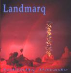

| Artist: | Landmarq |
| Title: | Infinity Parade |
| Label: | Cyclops CYCL 117 |
| Length(s): | 60 minutes |
| Year(s) of release: | 1993/2002 |
| Month of review: | [09/2002] |
| 1) | Solitary Witness | 6.50 |
| 2) | Gaia's Waltz | 6.05 |
| 3) | Landslide | 3.55 |
| 4) | Ta'Jiang | 16.31 |
| 5) | Tailspin ( Let Go The Line) | 8.37 |
| 6) | The More You Seek The More You Lose | 5.41 |
| 7) | Embrace | 6.30 |
| 8) | Borrowed Mind | 5.27 |
Striking about Gaia's Waltz is that lyrics and music go hand in hand: the impression of a train in the beginning, the waltzy feel of the song, the pagan feel that pervades the song as well. D'Rose's guitar wails in high pitched fashion, later lower and somewhat rougher, the even more waltzy dancing part which could be interpreted as a chorus. What strikes me most about the music now, is that the band goes as it so carefully. Like they want to say: song and melody first, energy later. Although you might get the impression that the music of Landmarq is very simple, when you listen close you hear how many different passages make up a song, because of their relatedness you do not easily seem them as different. Especially Wagstaffe often goes against the grain on this one.
Landslide is a jazzy instrumental, with a typical sensuous Landmarq intermezzo, and in my opinion the weakest track on the entire album. Something to play live, but not to put on an album. It's total opposite is the imposing Ta'Jiang with its over sixteen minutes of melodic diversity tells the story of a boattrip on the river of the same name. It is especially striking how well Leigh made the story connect to the music, especially the part where the music really sounds as if you are going up a river in a speed boat. The momentous delivery of Wilson rounds out this track. In somewhat more detail, the song contains a big load of piano, melodic and repetitive, Wagstaffe and Leigh's low piano playing are responsible for picturing the waves cresting against the boat, Damian's delivery adds the goosebumps. Then the music moves under water with intermittent piano, burbly keyboards. Then the main the of the song comes in with Gee supporting the theme on bass. Wilson comes in then with a heartfelt, understated vocal part that again makes the goosebumps come on. It is not just his vocals, but the moody melancholy of the whole band, with the percolating guitar playing of D'Rose being very distinctive. Half the ninth minute the pace gets back in the song and we are in for a ride. The church organ, the furious guitar playing, the driving rhythmic force, the watery waltzy interludes (with the dancing piano). At the end the urgent vocal part (the boat racing) returns and we continue to fade, with the tear in Wilson's voice doing good work.
On Tailspin (Let Go The Line) we open with the sound of a motor boat, so in that way we stay in the line of the previous song. This however is extremely dreamy, almost New Agey. In view of its length, one might be tempted to think that this song does not hold up. This was in fact my first opinion of the track, but one does get used to it. The bass is very prominent yielding a current on which the rest of the song finds its place: the simple flutish keyboards, the soft washes of drums, the varied vocals, intertwining, restful later plaintive. For some probably a bit too mellow.
The More You Seek The More You Lose is something else entirely. A short up-beat piece of work, which really works well. Like on some of the tracks, the synth sounds come over a bit cheesy. Especially the trumpety ones. Melodically there is something Arabic about it all.
You will probably not be interested in hearing that Embrace was the song that my wife and I used to open the dances at our wedding. We can not dance ourselves so we simply stood still when this song was playing. Embrace is a sensuous ballad, and shows why Landmarq is a band which also has a large female following, much larger than of other contemporary progressive bands (this is something I have seen at concerts at least, although admittedly, the effect was less apparent since Tracy joined the club). Behind Damian Wilson's emotive vocals, the clear high vocals of Eileen Ruthford are added to good effect. A love ballad, yes, cheesy, maybe, but it works for me.
Borrowed Mind is the bonus track from the SI Compilation Disc Too and its lyrics are also included. The track does not strike me as very different from the other tracks, although it does sound a bit newer. Maybe the transition to the harder edged follow-up was being made.